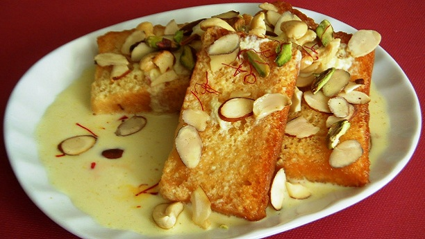

SHAHI TUKRAY RECIPE

INGREDIENTS
METHODS
- Soak 10-15 Pistachios and 20 almonds in water.
- Peel and finely chop them.
- Heat oil in a pan and fry 6 bread slices till they turn golden brown.
- When the pan is cool enough, remove the oil and pour 1 liter milk with 6 green cardamoms, Cook for a
while.
- As the milk start getting thick, Add 2-3 bread slices, half cup sugar and a pinch of yellow food color.
- Dish out the bread slices when they completely absorb the milk from the pan, Repeat the same procedure
with rest of the slices.
- Pour the remaining milk and sprinkle almonds and pistachios on the dish.
- Add 250 gram unsweetened Khoya in the dish.
- In the end garnish it with silver foil.